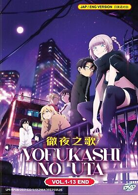

-Shounen: Fiatal fiúk a célközönség. Akciódús, barátságról, fejlődésről szól. Pl. Naruto, One Piece, My Hero Academia.
->Shoujo: Fiatal lányoknak szól. Gyakran romantikus, érzelmes. Pl. Sailor Moon, Fruits Basket.
-Seinen: Felnőtt férfiaknak szól. Komolyabb témák, több erőszak vagy pszichológiai elem. Pl. Berserk, Ghost in the Shell.
->Josei: Felnőtt nőknek szól. Érettebb romantika és érzelmi dráma. Pl. Nana, Paradise Kiss.
-Kodomo: Kisgyerekeknek készült. Egyszerű történet, tanulságos. Pl. Doraemon, ****Pokémon*****
2. Műfaj szerint:
-Akció (Action): Harc, üldözés, erős tempó. Pl. Attack on Titan.
->Romantika (Romance): Szerelmi kapcsolatok állnak a középpontban. Pl. Toradora, ****call of the night****
-Fantasy: Képzeletbeli világok, mágia. Pl. Made in Abyss.
->JSci-fi: Tudományos-fantasztikus témák, jövő, technológia. Pl. Steins;Gate.
-Horror: Félelemkeltés, szörnyek, pszichológiai rémület. Pl. Another, Hellsing.
->Slice of Life: Hétköznapi élet ábrázolása. Pl. Clannad, Barakamon.
-Isekai: A főhős egy másik világba kerül. Pl. Re:Zero, Sword Art Online.
->Mecha: Óriásrobotok a központban. Pl. Gundam, Evangelion.
-Sport: Sportversenyek, csapatdinamika. Pl. Haikyuu!!, Slam Dunk.
->Idol / zene: Zenei témák, idol élet. Pl. Love Live!, K-On!..

3. Egyéb stílusok, tematikák:
-Harem / Reverse Harem: Egy főszereplő körül sok romantikus érdeklődő (harem: fiú, reverse: lány). Pl. Ouran High School Host Club.
->Yaoi (Boys' Love) / Yuri (Girls' Love): Azonos neműek közötti romantika.
-Seinen: Felnőtt férfiaknak szól. Komolyabb témák, több erőszak vagy pszichológiai elem. Pl. Berserk, Ghost in the Shell.
Psychological: Mélyebb lélektani témák, csavarok. Pl. Death Note, Monster.
->Paródia / Komédia: Humor, szatíra. Pl. Gintama, ****Konosuba*****.